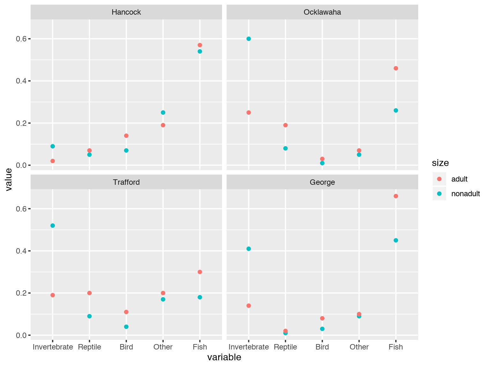

Introduction
- Categorical outcomes are encountered often in practice and is a generalization of a biomial outcome. Example of such include
- Surveys with likert scale,
- customer ratings on review website,
- political beliefs,
- Distribution of eye color of 100 babies born in a certain state,
- Number of genes a cell expresses under certain condition.
- Number of words used in an article for certain topic in Wikipedia, etc.
People often choose categorical outcome for various reasons including convenience. However, what many people realize after getting the data is that the analysis of categorical outcome is much more complicated compared to a linear regression or even a logistic regression.
Going through this set of tutorials, you will also notice very quickly that interpreting a categorical regression model is not easy, if you can interpret them at all. Let me assure you that this is not a because you’ve failed to keep up, rather it is really difficult.
Categorical regression models are the first of multivariate outcomes models that you will encounter in this program. This tutorial will go into many details, especially for this topic, since it is not covered much in the text books. So please try to not get discouraged.
GLM for categorical response
- There are two types of categorical variables that we will consider.
- Nominal: no natural order among the response categories
- Butterfly types
- Different words
- Race/Ethnicity
- Ordinal: natural order among the response categories
- number of stars on restaurant review site
- Yes/Maybe/No, True/Indifferent/False
- Likert Scale: Strongly Agree/Agree/Neutral/Disagree/Strongly Disagree
- Nominal: no natural order among the response categories
- Depending on which type of variable we are considering, the choice of models we use will be slightly different. Therefore, it is important to understand the distinctions. At the same time, there are situations where it can be argued both ways. The rule of thumb is that if it is contextually feasible to treat the problem as an ordinal variable problem, it’s better to do so.
Multinomial distribution
- To understand categorical regression models, you need first to understand the multinomial distribution. Multinomial distribution is hard to grasp at first because it is a multivariate distribution.
- The cannonical example that is used for multinomial distribution is the rolls of multiple die. A fair 6 sided dice has 6 category outcome with each side coming up with an equal probability. If you roll a dice it will come up on one of the faces.
## [1] 2if you were to use dummy coding, this would look like
## [1] 0 1 0 0 0 0If you roll 10 die then there will be multiple die with same faces.
## [1] 1 5 1 5 5 2 5 3 5 3If you were to tally up the number of faces, then you will have counts associated with each face of a dice that would sum to 10.
## rolls
## 1 2 3 5
## 2 1 2 5This is an example of a multinomial distribution.
- Multinomial distribution is a multivariate random variable \(\mathbf{y}\) with \(c\) categories.
- Let \(\pi_1, \pi_2,\dots, \pi_c\) be the probabilities associated with each of the categories where \(\pi_1 + \pi_2+ \dots + \pi_c=1\).
If there is \(n\) independent observations of \(\mathbf{y}\) which result in \(y_1\) outcomes in category 1, \(y_2\) outcomes in category 2, and so on, each \(y_j\) being the number of times \(j\)th category occurred then, \[\mathbf{y}=\left[\begin{array}{c} y_1\\ y_2\\ \vdots\\ y_c \end{array}\right] \mbox{ with } \sum^c y_j = n\]
- \(\mathbf{y}\) is from multinomial distribution when it’s pdf is \[f(\mathbf{y}|n,\boldsymbol{\pi})=\frac{n!}{y_1!y_2!\cdots y_c!}\pi_1^{y_1} \pi_2^{y_2}\cdots \pi_c^{y_c}\] We denote using \(\mathbf{y}\sim Mult(n,\pi_1, \pi_2,\dots, \pi_c)\)
- Expected value of the \(j\)th category: \(E(y_j)=n\pi_j\)
- Variance of the \(j\)th category:\(Var(y_j)=n\pi_j(1-\pi_j)\) and
Covariance between categories \(j\) and \(k\): \(Cov(y_j,y_k)=-n\pi_j\pi_k\)
Multinomial distribution (example)
The most elementary example of a phenomena that follow multinomial distribution is rolls of a dice. A 6 faced dice would have \(c=6\) and if the dice is fair, chance of seeing each face is \(1/6\). Therefore, \(\boldsymbol{\pi} =(1/6,1/6,1/6,1/6,1/6,1/6)\).
- A result of rolling a fair dice \[\mathbf{y} \sim Mult(n=1,\boldsymbol{\pi} =(1/6,1/6,1/6,1/6,1/6,1/6))\]
- if you roll a dice, you can get only one face as an outcome.
For a \(i\)th roll the outcome will be \(\mathbf{y}_i=(y_{i1},y_{i2},y_{i3},y_{i4},y_{i5},y_{i6})\)
| 1 | 2 | 3 | 4 | 5 | 6 | Sum |
|---|---|---|---|---|---|---|
| \(y_{i1}\) | \(y_{i2}\) | \(y_{i3}\) | \(y_{i4}\) | \(y_{i5}\) | \(y_{i6}\) | 1 |
only 1 of \(y_{ij}\) is 1.
- If there are multiple observations this would be
| i | 1 | 2 | 3 | 4 | 5 | 6 | sum |
|---|---|---|---|---|---|---|---|
| 1 | \(y_{11}\) | \(y_{12}\) | \(y_{13}\) | \(y_{14}\) | \(y_{15}\) | \(y_{16}\) | 1 |
| 2 | \(y_{21}\) | \(y_{22}\) | \(y_{23}\) | \(y_{24}\) | \(y_{25}\) | \(y_{26}\) | 1 |
| 3 | \(y_{31}\) | \(y_{32}\) | \(y_{33}\) | \(y_{34}\) | \(y_{35}\) | \(y_{36}\) | 1 |
| \(\vdots\) | \(\vdots\) | \(\vdots\) | \(\vdots\) | \(\vdots\) | \(\vdots\) | \(\vdots\) | 1 |
| G | \(y_{G1}\) | \(y_{G2}\) | \(y_{G3}\) | \(y_{G4}\) | \(y_{G5}\) | \(y_{G6}\) | 1 |
- Count of each face when rolling 10 fair die \[\mathbf{y} \sim Mult(n=10,\boldsymbol{\pi} =(1/6,1/6,1/6,1/6,1/6,1/6))\]
- if you roll a dice 10 times, you can get only one face for each trial but you can get 10 of them. Therefore, \(\mathbf{y}\) will have 10 trials divided into 6 categories.
| i | 1 | 2 | 3 | 4 | 5 | 6 | sum |
|---|---|---|---|---|---|---|---|
| 1 | \(y_{11}\) | \(y_{12}\) | \(y_{13}\) | \(y_{14}\) | \(y_{15}\) | \(y_{16}\) | 10 |
| 2 | \(y_{21}\) | \(y_{22}\) | \(y_{23}\) | \(y_{24}\) | \(y_{25}\) | \(y_{26}\) | 10 |
| 3 | \(y_{31}\) | \(y_{32}\) | \(y_{33}\) | \(y_{34}\) | \(y_{35}\) | \(y_{36}\) | 10 |
| \(\vdots\) | \(\vdots\) | \(\vdots\) | \(\vdots\) | \(\vdots\) | \(\vdots\) | \(\vdots\) | 10 |
| G | \(y_{G1}\) | \(y_{G2}\) | \(y_{G3}\) | \(y_{G4}\) | \(y_{G5}\) | \(y_{G6}\) | 10 |
Binomial is a special case of multinomial
- When there are 2 classes (\(c = 2\)), so
- out of \(n\) trials if \(y_1\) is number of occurrence of the first class, then \(y_2=n-y_1\) is automatically the occurrence of the second class
- Since the occurrence of two probabilities sum to 1 \[\pi_2 = 1-\pi_1\]
- If we plug these into the multinomial formula we have \[\begin{align} f(\mathbf{y}|n)&=\frac{n!}{y_1!y_2!}\pi_1^{y_1}\pi_2^{y_2}\\ &=\frac{n!}{y_1!(n-y_1)!}\pi_1^{y_1}( 1-\pi_1)^{n-y_1}\\ &= \binom{n}{y_1}\pi_1^{y_1}( 1-\pi_1)^{n-y_1} \end{align}\] which is a density for binomial distribution.
Marginal Distribution
- Someone comes to you and says I’ll roll \(n\) dies, if 1 or 6 comes out you win and otherwise he wins. How can you formulate a probability model that would describe such game?
If you think carefully, you will notice that the probability of coming up on a face that is not 1 nor 6 is just the sum of probabilities that comes up 2,3,4,and 5. If you treat the 4 faces as if they are one face, you have a dice with 3 faces.
In \(n\) dice rolls, if all we cared was the probability of 1, 6 and other. That would again follow a multinomial distribution \[y_1,y_6,y_o\sim Mult(n,\pi_1,\pi_6, 1-\pi_1-\pi_6)\]
Conditional distribution
Someone rolls \(n\) dies having certain probability for each face. You find out that there was certain number of 1s (\(a\)), what’s the probability distribution of the other faces? So to say it another way, if you rolled \(n\) dice but you ignored all the outcomes that was 1, what probability distribution is that? It’s the probability distribution of a dice with out face 1 rolled \(n-a\) times!
In \(n\) dice rolls, if we wanted a conditional distribution of faces 2 to 6 given \(y_1=a\) that again is multinomial \[(y_2,y_3,y_4,y_5,y_6)\sim Mult(n-a,\pi_2/(1-\pi_1), \cdots, \pi_6/(1-\pi_1))\]
Poisson conditioned on the sum is multinomial
- It turns out that there is a relationship between Poisson distribution and multinomial distribution, which becomes important later on. If \(c\) event happen independently following Poisson distribution each having a certain rate, if we know that \(n\) outcome occurred then that distribution is Multinomial.
For example, if we had \(5\) hospitals that had people visiting emergency rooms between some time intervals. If we knew that 15 people visited the emergency rooms during that time, then the number of people visiting each of the hospitals will follow a multinomial distribution.
- Let \(y_1,\dots,y_c\) be independent Poisson random variable. \[y_j \sim Poisson(\theta_j)\]
- Their joint density \[f(\mathbf{y})=\prod_{j=1}^{c}\frac{\theta_j^{y_j} \exp(-\theta_j)}{y_j!}\]
- If we let \(n=y_1+y_2+\dots+y_c\) then \[n\sim Poisson(\theta_1+\theta_2+\cdots+\theta_c)\]
Distribution of \(\mathbf{y}\) conditional on \(n\) is \[\begin{align} f(\mathbf{y}|n)&=\prod_{j=1}^{c}\frac{\theta_j^{y_j} \exp(-\theta_j)}{y_j!}/\frac{(\theta_1+\theta_2+\cdots+\theta_c)^n \exp(-(\theta_1+\theta_2+\cdots+\theta_c))}{n!}\\ &=\left(\frac{\theta_1}{\sum^c\theta_k}\right)^{y_1}\left(\frac{\theta_2}{\sum^c\theta_k}\right)^{y_2}\cdots \left(\frac{\theta_c}{\sum^c\theta_k}\right)^{y_c}\frac{n!}{y_1!y_2!\cdots y_c!}\\ &=\pi_1^{y_1}\pi_2^{y_2}\cdots \pi_c^{y_c}\frac{n!}{y_1!y_2!\cdots y_c!} \end{align}\]
Multinomial distribution (R)
- You can generate a sample from multinomial distribution using
rmultinom
(y=rmultinom(1,size=1,prob=c(0.1,0.3,0.2,0.4)))## [,1]
## [1,] 0
## [2,] 0
## [3,] 0
## [4,] 1- Multiple samples can be generated by specifying n
(y=rmultinom(5,size=1,prob=c(0.1,0.3,0.2,0.4)))## [,1] [,2] [,3] [,4] [,5]
## [1,] 0 0 0 0 0
## [2,] 0 0 0 0 0
## [3,] 0 0 0 0 0
## [4,] 1 1 1 1 1Multinomial distribution (random number generation)
- How would you generate a random number from a multinomial distribution?
- If we can generate random number between 0 and 1.
- Split \((0,1)\) into \(c\) intervals proportional to \(\pi_1, \pi_2,\dots, \pi_c\)
- Generate \(n\) random numbers from \(Uniform(0,1)\)
- Count the number of times the a generated numbers fell in the intervals.
p<-c(0.1,0.3,0.2,0.4)
z<-runif(100,0,1)## samp
## (0,0.1] (0.1,0.4] (0.4,0.6] (0.6,1]
## 9 39 12 40Nominal Categorical Outcome
- Nominal categorical outcome is a categorical outcome that does not have ordering. When there is no ordering between the outcome, the reference point becomes important because the effects we speak of is usually relative. Let’s start by looking at an example.
Choice for mode of travel
- Data on travel mode choice for travel between Sydney and Melbourne, Australia.
- Dataset is a binary matrix with 210 individuals times 4 modes of travel
##
## no yes
## air 152 58
## train 147 63
## bus 180 30
## car 151 59The type of travel mode does not have a clear order. One can order them by the price of their tickets, but they don’t live on a single spectrum.
Empirical proportion would be:
## air train bus car
## 0.3815789 0.4285714 0.1666667 0.3907285If this was a representative sample of some population of interest, this information would mean something. Nevertheless, when we say that 38% of the people chose air as their means of travel, that information itself does not have practical value unless there is some other information that one can reference to. For example, if we say that people prefer air travel 3 times more than bus travel and preference comparing air and car is about the same, then that starts to tell a story.
To rephrase this, the comparisons are meaningful only with respect to some baseline category. And that’s exactly how we will model a nominal categorical outcome.
Multinomial logit model
- Let number of response category be \(c\).
- \(\pi_{ij}\) be probability of response in category \(j\) for subject \(i\), \(\sum_j\pi_{ij}=1\).
- \(\mathbf{y}_i=(y_{i1},\cdots,y_{ic})\) for \(i=1,\dots,N\)
- \(y_{ij}=1\) when there is response in category \(j\) and 0 otherwise.
- \(\sum_j y_{ij}=1\) hence the multinomial probability distribution for subject \(i\) is \[P(y_{i1},\cdots,y_{ic})=\pi_{i1}^{y_{i1}}\cdots \pi_{ic}^{y_{ic}}\]
We pair each response category with the baseline category
c\[\log\frac{\pi_{i1}}{\pi_{ic}},\log\frac{\pi_{i2}}{\pi_{ic}},\cdots, \log\frac{\pi_{i(c-1)}}{\pi_{ic}}\]The jth baseline category logit, \(\log\frac{\pi_{ij}}{\pi_{ic}}\) is the logit of a conditional probability \[\begin{align} &logit[P(y_{ij}=1|y_{ij}= 1\mbox{ or }y_{ic}=1)]\\ &=\log\left[\frac{P(y_{ij}=1|y_{ij}= 1\mbox{ or }y_{ic}=1)}{1-P(y_{ij}=1|y_{ij}= 1\mbox{ or } y_{ic}=1)}\right]=\log\frac{\pi_{ij}}{\pi_{ic}} \end{align}\]
- Multinomial logit model (Baseline-category logit): \[\log\frac{\pi_{ij}}{\pi_{ic}}=\mathbf{X}_i\boldsymbol{\beta}_j=\sum^p_{k=1}\beta_{jk}x_{ik}, j=1,\dots, (c-1)\]
These \((c-1)\) equations determine equations for logits with other pairs of response categories \[\log\frac{\pi_{ia}}{\pi_{ib}}=\log\frac{\pi_{ia}}{\pi_{ic}}-\log\frac{\pi_{ib}}{\pi_{ic}}=\mathbf{X}_i(\boldsymbol{\beta}_a-\boldsymbol{\beta}_b)\]
We can express response probability as \[\pi_{ij}=\pi_{ic}exp(\mathbf{X}_i\boldsymbol{\beta}_j)\]
- Since \(\sum^c_{j=1} \pi_{ij} =1\) \[\pi_{ic}=\frac{1}{1+\sum^{c-1}_{h=1}exp(\mathbf{X}_i\boldsymbol{\beta}_h)}\]
Therefore \[\begin{align} \hat{\pi}_{ic}= \frac{ exp( \mathbf{X}_i \boldsymbol{\beta}_j)} { 1 + \sum^{c-1}_{h=1} exp(\mathbf{X}_i \boldsymbol{\beta}_h) } \end{align}\]
with \(\beta_c=0\)
Interpretation
- Interpretation of effects overall is NOT simple
- If we take derivative wrt \(x_{ik}\) \[\frac{\partial\pi_{ij}}{\partial x_{ik}}=\pi_{ij}(\beta_{jk}-\sum_{j'}\pi_{ij'}\beta_{j'k})\]
- Unlike logistic regression this rate of change does not always have the same sign as \(\beta_{jk}\).
fitting the model
- Contribution to the log-likelihood from subject i is \[\begin{align} \log(\prod^c_{j=1}\pi_{ij}^{y_{ij}})&= \sum y_{ij}\log\pi_{ij}+(1-\sum y_{ij})\log\pi_{ic}\\ &= \sum y_{ij}\log\frac{\pi_{ij}}{\pi_{ic}}+\log\pi_{ic} \end{align}\]
- This is natural parameters for the multinomial distribution.
baseline category logit is a the canonical link functions for mulitinomial GLMs.
For \(\log\frac{\pi_{ij}}{\pi_{ic}}\) we substitute \(\mathbf{X}_i\boldsymbol{\beta}_j\)
And \[\begin{align} \hat{\pi}_{ic}=\frac{1}{1+\sum^{c-1}_{h=1} \exp(\mathbf{X}_i\boldsymbol{\beta}_h)} \end{align}\]
Resulting in the log-likelihood function \[\begin{align} L(\boldsymbol{\beta};y)=... \end{align}\]
fitting the model
- Taking derivative wrt \(\beta_{jk}\) \[\begin{align} \frac{\partial L(\boldsymbol{\beta};y)}{\partial \beta_{jk}}= \sum_{i=1}^N x_{ik}(y_{ij}-\pi_{ij}) \end{align}\]
- The likelihood equations are \[\begin{align} \sum_{i=1}^N x_{ik}y_{ij}=\sum_{i=1}^N x_{ik}\pi_{ij} \end{align}\]
- Information matrix is \[\begin{align} -\frac{\partial^2 L(\boldsymbol{\beta};y)}{\partial \boldsymbol{\beta}_{j}\partial \boldsymbol{\beta}_{j'}^{T}}=\sum_{i=1}^N \pi_{ij}[1(j=j')-\pi_{ij}]\mathbf{x}_i^{T}\mathbf{x}_i \end{align}\]
- Newton-Raphson or Fisher scoring are identical and convergence is fast.
Multionomial Logit in R
There are at least five packages in R that you can fit multinomial logit model with. Each model differs in how one specifies the formula but overall result should be the same. It’s good to know different options so that you can compare the results.
multinomfunction innnetpackage is a classic option that uses Maximum conditional likelihood. It is a neural network model with no hidden layer and softmax output.
library(nnet)
multinom(formula=...,weights=...,data=...)mlogitfunction inmlogitpackage is another classical method that use full information maximum likelihood. The details can be found here
library(mlogit)
mldf <- mlogit.data(data=..., choice=...)
mlogit.mod <- mlogit::mlogit( formula, data=mldf)mnlogitfunction inmnlogitpackage claims they are much faster version ofmlogit. You an read about them here.
library(mnlogit)
mnlogit(formula, data)globaltestpackage offers yet anothermlogitfunction. I don’t know the benefit of this version ofmlogitover themlogit::mlogitbut it’s clear you don’t what to load both libraries at once.
# Install
source("https://bioconductor.org/biocLite.R")
biocLite("globaltest")
library(globaltest)
globaltest::mlogit(formula=..., data=...)- Alternatively,
vglmpackage by inVGAMpackage is becoming increasingly popular.
library(VGAM)
vglm(formula=...,family=multinomial, data=...)- Data formatting is slightly confusing but important to understand. There are three ways to fit the same model depending on how you structure your data. We will look at a fake data since it will simplify the understanding. For example, if your data looked like the following
x1<-sample(1:3,10,replace=TRUE)
x2<-sample(1:2,10,replace=TRUE)
y<- factor(sample(c("A","B","C"),10,replace = TRUE))
datsample<-data.frame(y,x1,x2)
datsamplelong format
This is probably the finest that you can specify your data. When your predictors have continuous variable, you will need to use this format.
fit<-multinom(y~x1+x2,data=datsample,trace=FALSE)
summary(fit)## Call:
## multinom(formula = y ~ x1 + x2, data = datsample, trace = FALSE)
##
## Coefficients:
## (Intercept) x1 x2
## B -43.171517 6.851519877 22.211054
## C -8.097129 -0.000884919 8.099412
##
## Std. Errors:
## (Intercept) x1 x2
## B 132.3890 23.876427 74.63952
## C 57.5855 1.095375 57.44647
##
## Residual Deviance: 15.59316
## AIC: 27.59316row counts format
If your predictors are all discrete, you can summarize them into count format.
datsum<-datsample%>%group_by(x1,x2,y)%>%summarise(count_y=length(y)) %>%
complete(x1,x2,y, fill = list(count_y = 0))
datsummultinom(y~x1+x2,weight=count_y,data=datsum)## # weights: 12 (6 variable)
## initial value 10.986123
## iter 10 value 8.578892
## iter 20 value 7.879871
## iter 30 value 7.841438
## iter 40 value 7.811197
## iter 50 value 7.801740
## iter 60 value 7.800815
## iter 70 value 7.797601
## iter 80 value 7.797314
## iter 90 value 7.797084
## iter 100 value 7.796582
## final value 7.796582
## stopped after 100 iterations## Call:
## multinom(formula = y ~ x1 + x2, data = datsum, weights = count_y)
##
## Coefficients:
## (Intercept) x1 x2
## B -43.171517 6.851519877 22.211054
## C -8.097129 -0.000884919 8.099412
##
## Residual Deviance: 15.59316
## AIC: 27.59316Tabulated format
In many cases, the counts are further compressed into a table format. In this kind of situation, you will specify the columns of the outcome on the left hand side and the combination of the attributes on the right hand side.
dattab<-dcast(datsample, x1+x2~y)
dattabfittab<-multinom(as.matrix(dattab[,3:5])~x1+x2,data=dattab,trace=FALSE)Inference
- With large \(n\), based on the asymptotic \[\boldsymbol{\hat{\beta}} \sim N(\beta,\boldsymbol{\mathcal{I}}^{-1})\]
- The \(\boldsymbol{\hat{\beta}}_j\)s are correlated.
- Likelihood ratio, Wald, and score test can be used.
- Global model check can be done through
- Deviance \[D=2\sum^N_{i=1}\sum^c_{j=1}n_iy_{ij}\log\frac{n_iy_{ij}}{n_i\hat{\pi}_{ij}}=2\sum \mbox{observed}\log\frac{\mbox{observed}}{\mbox{fitted}}\]
- Pearson statistics \[X^2=2\sum^N_{i=1}\sum^c_{j=1}\frac{(n_iy_{ij}-n_i\hat{\pi}_{ij})^2}{n_i\hat{\pi}_{ij}}= \sum \frac{(\mbox{observed}-\mbox{fitted})^2}{\mbox{fitted}}\]
- They are approximately \(\chi^2\) when all cell frequency are bigger than 5.
- degrees of freedom is \(N(c-1)-p\)
[Example] Alligator food preference
- What does Alligators like to eat? Researchers went out and studied what the alligators are feeding on at different locations for adult and non-adult alligators. This example comes from [@agresti2015foundations].
Initial inspection of the data reveals that
- adults and non-adults prefer to eat different things even at the same lake.
- what the creatures eat is dependent on the location.
Fitted model
- The outcomes are vectors of number of animals being eaten. These are specified as a matrix similar to the way the binomial model was formulated. The last category is taken as the baseline, which in the below example is the
Fish.
gator_fit<-vglm(cbind(Invertebrate, Reptile, Bird, Other,Fish)
~ size+lake,
family=multinomial,data=gator)The estimated coefficients are as follows.
## Estimate Std. Error z value Pr(>|z|)
## (Intercept):1 -3.21 0.64 -5.02 0.00
## (Intercept):2 -2.07 0.71 -2.93 0.00
## (Intercept):3 -1.40 0.61 -2.30 0.02
## (Intercept):4 -1.08 0.47 -2.29 0.02
## sizenonadult:1 1.46 0.40 3.68 0.00
## sizenonadult:2 -0.35 0.58 -0.61 0.54
## sizenonadult:3 -0.63 0.64 -0.98 0.33
## sizenonadult:4 0.33 0.45 0.74 0.46
## lakeOcklawaha:1 2.60 0.66 3.93 0.00
## lakeOcklawaha:2 1.22 0.79 1.55 0.12
## lakeOcklawaha:3 -1.35 1.16 -1.16 0.25
## lakeOcklawaha:4 -0.82 0.73 -1.12 0.26
## lakeTrafford:1 2.78 0.67 4.14 0.00
## lakeTrafford:2 1.69 0.78 2.17 0.03
## lakeTrafford:3 0.39 0.78 0.50 0.62
## lakeTrafford:4 0.69 0.56 1.23 0.22
## lakeGeorge:1 1.66 0.61 2.71 0.01
## lakeGeorge:2 -1.24 1.19 -1.05 0.29
## lakeGeorge:3 -0.70 0.78 -0.89 0.37
## lakeGeorge:4 -0.83 0.56 -1.48 0.14- We have as a result 4 prediction equations.
- log odds of selecting invertebrate over fish \[logit\left(\frac{\hat{\pi}_{i1}}{\hat{\pi}_{i5}}\right)=-3.21+1.46 x_i^{sizeNoAdlt}+2.6x_i^{lakeOck}+2.78x_i^{lakeTrf}+1.66x_i^{lakeGrg}\]
log odds of selecting reptile over fish \[logit\left(\frac{\hat{\pi}_{i2}}{\hat{\pi}_{i5}}\right)=-2.07+-0.35 x_i^{sizeNoAdlt}+1.22x_i^{lakeOck}+1.69x_i^{lakeTrf}+-1.24x_i^{lakeGrg}\]
- log odds of selecting bird over fish \[logit\left(\frac{\pi_{i3}}{\pi_{i5}}\right)=-1.4+-0.63 x_i^{sizeNoAdlt}+-1.35x_i^{lakeOck}+0.39x_i^{lakeTrf}+-0.7x_i^{lakeGrg}\]
log odds of selecting other over fish \[logit\left(\frac{\hat{\pi}_{i4}}{\hat{\pi}_{i5}}\right)=-1.08+0.33 x_i^{sizeNoAdlt}+-0.82x_i^{lakeOck}+0.69x_i^{lakeTrf}+-0.83x_i^{lakeGrg}\]
- We can use the same method we used in logistic regression to interpret these coefficients.
Selecting the model
Is there evidence to suggest there is difference in what the alligators eat at the different location and are there differences in the type of foods preferred by adults and non-adults? We fit three models and compared their AIC, which does seem to support our initial EDA result.
| Model | Deviance | Df | AIC |
|---|---|---|---|
| size+lake | 17.08 | 12 | 135.03 |
| lake | 38.17 | 16 | 148.12 |
| size | 66.21 | 24 | 160.16 |
- We can get the fitted probability by using the
fittedfunction. Looking at the fitted probabilities is a another way to understand the model fit.
tabl<-cbind(gator[,1:2,with=FALSE],round(fitted(gator_fit),2))
kable(tabl)| lake | size | Invertebrate | Reptile | Bird | Other | Fish |
|---|---|---|---|---|---|---|
| Hancock | nonadult | 0.09 | 0.05 | 0.07 | 0.25 | 0.54 |
| Hancock | adult | 0.02 | 0.07 | 0.14 | 0.19 | 0.57 |
| Ocklawaha | nonadult | 0.60 | 0.08 | 0.01 | 0.05 | 0.26 |
| Ocklawaha | adult | 0.25 | 0.19 | 0.03 | 0.07 | 0.46 |
| Trafford | nonadult | 0.52 | 0.09 | 0.04 | 0.17 | 0.18 |
| Trafford | adult | 0.19 | 0.20 | 0.11 | 0.20 | 0.30 |
| George | nonadult | 0.41 | 0.01 | 0.03 | 0.09 | 0.45 |
| George | adult | 0.14 | 0.02 | 0.08 | 0.10 | 0.66 |
Since the table of numbers are hard to see, visual inspection is something we can do.
ggplot(melt(tabl,id.vars=c("lake","size")))+geom_point()+aes(x=variable,y=value,color=size)+facet_wrap(~lake) This plot highlights the food types where there is discrepancy between the adults and non-adults.
Radar plot
By adding coord_polar()+ geom_polygon(fill=NA) you can get a radar plot.
ggplot(melt(tabl,id.vars=c("lake","size")))+geom_point()+aes(x=variable,y=value,color=size,group=size)+facet_wrap(~lake)+ coord_polar()+ geom_polygon(fill=NA)Model checks
- We can check the fit of the model using the binned residual plots.
py<-predict(gator_fit,type="response")
gatordf<-as.data.frame(gator)
pr <-data.frame(gatordf[,colnames(py)]/rowSums(gatordf[,colnames(py)])-py)
par(mfrow=c(1,5))
for(i in 1:5) binnedplot(py[,i],pr[,i])Ordinal Catergorial Outcome
Ordered Caterogical variable
- Although we can use the baseline logit model for any categorical data, when there is ordering in the response categories, one should try to take that into account.
- Some examples of such categorical outcome are
- Likert scale: agree, moderately agree, neutral, moderately disagree, disagree
- Opinion poll: support, don’t know, against
- number of star on a restaurant website
- It is similar to fitting logistic regressions as in the nominal multinomial regression case, however the difference is that neighboring categories have some predefined relationships. Therefore, what one would term as a success and failure may depend on the problem and because of that there are multiple flavors of the ordinal logistic models.
- Cumulative logit model (most popular)
- Adjacent categories logit model
- Continuation ratio logit model
- We will focus on the cumulative logit model so if anything, try to understand the essence of the model.
Cumulative logit
- Let \(y_i\) be response for subject \(i\).
- \(y_i = j\) means \(y_{ij}=1\) and \(y_{ik}=0\) for \(k\neq j\) for \(c\) indicators. \[P(y_i\leq j)=\pi_{i1}+\cdots+\pi_{ij}\]
Cumulative logit: \[\begin{align} logit(P(y_i\leq j))&=\log\frac{P(y_i\leq j)}{1-P(y_i\leq j)}\\ &=\log\frac{\pi_{i1}+\cdots+\pi_{ij}}{\pi_{i(j+1)}+\cdots+\pi_{ic}},j=1,\dots, c-1 \end{align}\]
- If you look only at a particular \(j\), \(logit(P(y_i\leq j))\) is a logistic regression model with categories 1 to \(j\) as success and \(j+1\) to \(c\) as failures.
We can combine all \(j-1\) logistic regression into a parsimonious model. \[\begin{align} logit(P(y_i\leq j))= \alpha_j + \mathbf{X}_i\boldsymbol{\beta},j=1,\dots, c-1 \end{align}\]
- Cumulative odds ratio \[\begin{align} &logit(P(y_i\leq j|\mathbf{x}_i=\mathbf{u}))-logit(P(y_i\leq j|\mathbf{x}_i=\mathbf{v}))\\ &=\log\frac{P(y_i\leq j|\mathbf{x}_i=\mathbf{u})/P(y_i> j|\mathbf{x}_i=\mathbf{u})}{P(y_i\leq j|\mathbf{x}_i=\mathbf{v})/P(y_i> j|\mathbf{x}_i=\mathbf{v})}\\ &=(\mathbf{u}-\mathbf{v})\boldsymbol{\beta} \end{align}\]
- Odds that \(y_i\leq j\) at \(\mathbf{x}_i=\mathbf{u}\) are \((\mathbf{u}-\mathbf{v})\boldsymbol{\beta}\) times the odds at \(\mathbf{x}_i=\mathbf{v}\)
Proportional odds model
Special case of cumulative logit model \[\begin{align} \frac{P(y_i\leq j)}{P(y_i> j)}&= exp(\alpha_j + x_{i1}\beta_1+ x_{i2}\beta_2+\cdots + x_{ip}\beta_p ),j=1,\dots, c-1 \end{align}\]
- Every unit increase in \(x_{i1}\) odds of \(y_i\leq j\) gets a multiplicative increase of \(exp(\beta_1)\).
- This is true for all \(j\).
This property of common effect for all the cumulative probability is referred to as proportional odds.
Latent variable formulation
- Let \(z_i\) denote underlying latent variable for subject \(i\).
- Suppose \(z_i\) has CDF \(G(\alpha_{j}-\mu_i)\) where \(\mu_i=\mathbf{x}_i\boldsymbol{\beta}\).
- Cutpoints \(-\infty=\alpha_0<\alpha_1<\cdots <\alpha_c = \infty\)
- We observe \[y_i = j \mbox{ if } \alpha_{j-1} \leq z_i \leq \alpha_{j}\]
- Then \[P(y_i\leq j)=P(z_i\leq \alpha_{j})=G(\alpha_{j}-\mu_i)=G(\alpha_{j}-\mathbf{x}_i\boldsymbol{\beta})\]
- The linear predictor \(\alpha_{j}-\mathbf{x}_i\boldsymbol{\beta}\) instead of \(\alpha_{j}+\mathbf{x}_i\boldsymbol{\beta}\).
fitting
\[\begin{align} \prod^N_{i=1}\left(\prod^c_{j=1}\pi_{ij}^{y_{ij}}\right) &=\prod^N_{i=1}\left(\prod^c_{j=1}[P(y_i\leq j)-P(y_i\leq j-1)]^{y_{ij}}\right) \end{align}\]
\[L(\alpha,\beta)=\sum^N_{i=1}\sum^c_{j=1}y_{ij}\log[G(\alpha_{j}-\mathbf{x}_i\boldsymbol{\beta})-G(\alpha_{j-1}-\mathbf{x}_i\boldsymbol{\beta})]\]
- Likelihood equations are for \(\beta\)s \[\frac{\partial L(\alpha,\beta)}{\partial \beta_k} =\sum^N_{i=1}\sum^c_{j=1}y_{ij}x_{ik}\frac{g(\alpha_{j}-\mathbf{x}_i\boldsymbol{\beta})-g(\alpha_{j-1}-\mathbf{x}_i\boldsymbol{\beta})}{G(\alpha_{j}-\mathbf{x}_i\boldsymbol{\beta})-G(\alpha_{j-1}-\mathbf{x}_i\boldsymbol{\beta})}=0\]
and for \(\alpha\) \[\frac{\partial L(\alpha,\beta)}{\partial \alpha_k} =\sum^N_{i=1}\sum^c_{j=1}y_{ij}\frac{\delta_{jk}g(\alpha_{j}-\mathbf{x}_i\boldsymbol{\beta})-\delta_{(j-1)k}g(\alpha_{j-1}-\mathbf{x}_i\boldsymbol{\beta})}{G(\alpha_{j}-\mathbf{x}_i\boldsymbol{\beta})-G(\alpha_{j-1}-\mathbf{x}_i\boldsymbol{\beta})}=0\]
Newton-Raphson method or Fisher scoring to solve.
Ordered logits in R
- Two packages
MASS::polruses Model 3 parametrization (GH p.122)VGAM::vglm(,family=cumulative)
Adjacent categories logit model
- Alternative to cumulative odds model is to consider ratios of probabilities for successive categories \[\frac{\pi_{i1}}{\pi_{i2}},\frac{\pi_{i2}}{\pi_{i3}},\cdots, \frac{\pi_{i(c-1)}}{\pi_{ic}}\]
- Adjacent categories logit model \[\log\frac{\pi_{ij}}{\pi_{i(j+1)}}=\mathbf{x}_i\boldsymbol{\beta}_j\]
- If we simplify to \[\log\frac{\pi_{ij}}{\pi_{i(j+1)}}=\beta_{0j}+\beta_{1}x_1+\cdots + \beta_{p-1}x_{p-1}\] the effect of each explanatory variable is assumed to be same for all adjacent pairs of categories.
Continuation ratio logit model
Alternative to cumulative odds model is to consider ratios of probabilities for successive categories \[\frac{\pi_{i1}}{\pi_{i2}},\frac{\pi_{i1}+\pi_{i2}}{\pi_{i3}},\cdots, \frac{\pi_{i1}+\cdots+\pi_{i(c-1)}}{\pi_{ic}}\] or \[\frac{\pi_{i1}}{\pi_{i2}+\cdots+\pi_{ic}}, \frac{\pi_{i2}}{\pi_{i3}+\cdots+\pi_{ic}},\cdots +\frac{\pi_{i(c-1)}}{\pi_{ic}}\]
Continuation ratio logit model
\[\log\left(\frac{\pi_{ij}}{\pi_{i(j+1)}+\cdots+\pi_{ic}}\right)=\mathbf{x}_i\boldsymbol{\beta}_j\]
- Models the odds of the response being in category \(j\) that is \(\alpha_{j-1} < z_i < \alpha_{j}\) conditioned on \(\alpha_{j-1} <z_i\)
[Example] Car preferences
Car preferences (air conditioning and power steering)
- [@dobson2008introduction] 50 subjects in each of the 6 categories (2 gender and 3 age groups) were asked
- How important is air conditioning and power steering?
1: No/Little2: Important3: Very important
Car_preferences <- fread("Car_preferences.csv")
Car_preferences- Here is the visualization of the data
- Same information on a frequency scale

What you can see is that there is large difference across the age groups There is slight difference between the gender for each age group suggesting that interaction between gender and age is not too large.
Model
- We will fit a proportional odds model \[\log\left(\frac{\pi_{2}+\pi_{3}}{\pi_{1}}\right)=\beta_1x_{men}+\beta_2x_{24-40}+\beta_3x_{40over}-\beta_{12}\]
\[\log\left(\frac{\pi_{3}}{\pi_{1}+\pi_{2}}\right)=\beta_1x_{men}+\beta_2x_{24-40}+\beta_3x_{40over}-\beta_{23}\]
- We can do this several ways but we’ll use
polrso that we are consistent with the Gelman and Hill book.
car_polr<- polr(response_f~sex_m+age_f,weights=frequency,
data=Car_preferences)
round(summary(car_polr)$coef,2)##
## Re-fitting to get Hessian## Value Std. Error t value
## sex_mmen -0.58 0.23 -2.55
## age_f24-40 1.15 0.28 4.13
## age_f> 40 2.23 0.29 7.66
## no/little|important 0.04 0.23 0.19
## important|very important 1.65 0.26 6.47##
## Re-fitting to get Hessian- The fitted models are
\[\log\left(\frac{\hat{\pi}_{2}+\hat{\pi}_{3}}{\hat{\pi}_{1}}\right)=-0.04+-0.58x_{men}+1.15x_{24-40}+2.23x_{40over}\]
\[\log\left(\frac{\hat{\pi}_{3}}{\hat{\pi}_{1}+\hat{\pi}_{2}}\right)=-1.65+-0.58x_{men}+1.15x_{24-40}+2.23x_{40over}\]
Plotting the predicted probability
We can visualize the result by plotting the predicted probability.
Stacked barplots are nice but it does not highlight details.
predx<- expand.grid(sex_m=c("women","men"),age_f=c("18-23","24-40","> 40"))
predy<-predict(car_polr,newdata=predx,type = "p")
ggplot(melt(cbind(predx,predy),id.vars = c("sex_m","age_f")))+
geom_bar(stat="identity")+aes(x=age_f,y=value, fill=variable)+
facet_grid(~sex_m)- Line chart misses the proportionality component of the outcome but it is easier to see the discrepancy with the initial EDA plot.
ggplot(melt(cbind(predx,predy),id.vars = c("sex_m","age_f")))+
geom_line()+aes(x=variable,y=value,group=age_f, color=age_f)+
facet_grid(~sex_m)Confidence Interval
As with all GLM you can use the profile likelihood CI or the Wald CI.
round(confint(car_polr),2)## Waiting for profiling to be done...##
## Re-fitting to get Hessian## 2.5 % 97.5 %
## sex_mmen -1.02 -0.13
## age_f24-40 0.61 1.70
## age_f> 40 1.67 2.81round(confint.default(car_polr),2)##
## Re-fitting to get Hessian## 2.5 % 97.5 %
## sex_mmen -1.02 -0.13
## age_f24-40 0.60 1.69
## age_f> 40 1.66 2.801-pchisq(deviance(car_polr),df.residual(car_polr))## [1] 0car_polr<- polr(response_f~sex_m+age_f,weights=frequency,data=Car_preferences)
residpolr<-(model.matrix(~response_f-1,Car_preferences)-car_polr$fitted.values)
predx2<- expand.grid(age_f=c("18-23","24-40","> 40"),sex_m=c("women","men"))
predy2<-predict(car_polr,newdata=predx2,type = "p")model choice
- Do we have strong evidence to add the interaction term? The visual inspection did see slight possibility of gender and age interacting but the effect was not too large.
fit<-polr(response_f~sex_m+age_f,weights=frequency,data=Car_preferences)
fit2<-polr(response_f~sex_m*age_f,weights=frequency,data=Car_preferences)
pchisq(deviance(fit)-deviance(fit2), df=df.residual(fit)-df.residual(fit2), lower.tail=FALSE)## [1] 0.3374261AIC(fit);AIC(fit2)## [1] 591.2956## [1] 593.1227Model check
- We should always check the residuals for any signs of misfit.
residr<-dcast(Car_preferences2, sex_m +age_f~response_f, value.var = "freq")[,3:5]-predy2
par(mfrow=c(1,3))
for(i in 1:3) binnedplot(predy2[,i],residr[,i])#vglm(response_f~sex_m+age_f,weights=frequency,data=Car_preferences,family=cumulative(parallel=TRUE))Interpreting the model
fitted models \[\begin{align} \log\left(\frac{\hat{\pi}_{1}}{\hat{\pi}_{2}+\hat{\pi}_{3}}\right)&=0.04+(-0.58)x_{men}+ 1.15x_{24-40}+2.23x_{40over}\\ \log\left(\frac{\hat{\pi}_{1}+\hat{\pi}_{2}}{\hat{\pi}_{3}}\right)&=1.65+(-0.58)x_{men}+ 1.15x_{24-40}+2.23x_{40over} \end{align}\]
For a female, age 18-23, \(x_{men}=0\), \(x_{24-40}=0\) and \(x_{40over}=0\)
\[\log\left(\frac{\hat{\pi}_{1}}{\hat{\pi}_{2}+\hat{\pi}_{3}}\right)=0.0435371\] \[\log\left(\frac{\hat{\pi}_{1}+\hat{\pi}_{2}}{\hat{\pi}_{3}}\right)=1.6549745\]
If we solve for \(\hat{\pi}_{1}\),\(\hat{\pi}_{2}\), and \(\hat{\pi}_{3}\) under \(\hat{\pi}_{1}+\hat{\pi}_{2}+\hat{\pi}_{3}=1\) we get \(\hat{\pi}_{1}=0.51\), \(\hat{\pi}_{2}=0.33\), and \(\hat{\pi}_{3}=0.16\).
Or we can use
fittedfunction.
cbind(Car_preferences[,list(sex_m,age_f)],fitted(car_polr))[seq(1,18,by=3),]